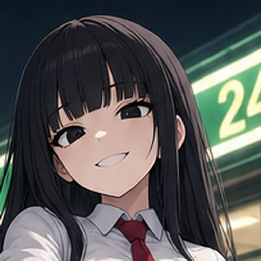

운영자 260805: "일진녀 좀 더 얼빡시켜서 배경 안나오게 해줘. 얼굴의 중심이 중심부가 되어야됨 대신". 대상 = viewer/characters/season/hanna/hanna_face.webp(roster avatar) 한 파일. 원본 = 353차와 같은 ilzin_sheetE_p3.png PALM 칸 — 새로 생성하지 않고 같은 원본을 다시 잘랐다(얼굴이 안 바뀐다 · 과금 0).
전머리~어깨 + 편의점 간판(24h 초록)이 프레임의 1/3

십자선 = 프레임 중심. 얼굴 중심이 중심에서 왼쪽으로 밀려(가로 ≈41%) 있고, 오른쪽 절반을 간판·야경이 차지한다.
후얼굴이 프레임을 가득 · 배경 0 · 얼굴 중심 = 프레임 중심
십자선이 콧대에 얹힌다 — 재단 기준점을 눈 중점과 입 사이(얼굴 중심)로 잡았기 때문. 네 모서리는 전부 머리카락이다.
전
후
작은 원에서 차이가 제일 크다 — 전은 34px에서 얼굴이 원의 1/4이라 「누군지」가 안 읽혔고, 후는 그 크기에서도 표정이 남는다.
| 항목 | 값 |
|---|---|
| 원본 | viewer/assets/yeta_char/board/ilzin_sheetE_p3.png (1024×1536) · PALM 칸 = 시트 좌표 (28, 772) 시작 312×686 |
| 얼굴 중심 실측 | 칸 좌표 (159, 121) = 시트 좌표 (187, 893) — 눈 중점과 입 중점 사이(콧대) |
| 재단 박스 | 100×100 @ 시트 (137, 843) → 중심이 정확히 얼굴 중심 |
| 크기 선정 근거 | 우상단 코너 평균 RGB로 배경 유입 계측(순수 머리카락 기준 = 좌상단 27,28,36) — 96px(34,35,41) / 100px(39,39,45) ← 채택 / 104(43,42,47) / 108(53,50,55) / 112(68,62,66 = 간판이 눈에 보이게 유입). 104부터 코너가 계속 밝아져 육안으로도 간판이 새기 시작 → 배경 0을 지키는 값으로 100 |
| 산출 | scale=512:512:flags=lanczos + unsharp=5:5:0.6 → webp q82 · 25.9KB → 11.6KB |
배선 변경 0 — roster.json avatar 경로도, media.json도 그대로다(파일만 교체). 파일명에 face가 있어 배경 풀에서 자동 제외되는 규약도 유지 = check_refs 얼빡 배경 게이트 프사 0 통과.
해상도 정직 고지: 원본 얼굴 박스가 100px이라 512²는 5.1배 업스케일이다 — 1:1로 크게 띄우면 물러 보인다. 앱이 실제로 그리는 34~104px에서는 문제가 없다(위 ② 열). 1:1에서도 또렷하게 가려면 얼빡 전용 1장 재생성(유료 dispatch · 원본 첨부 edits 경로)이 필요하다.